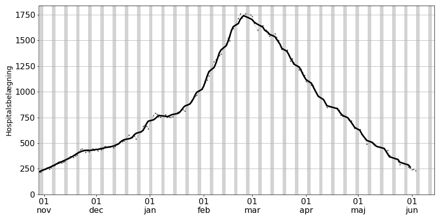
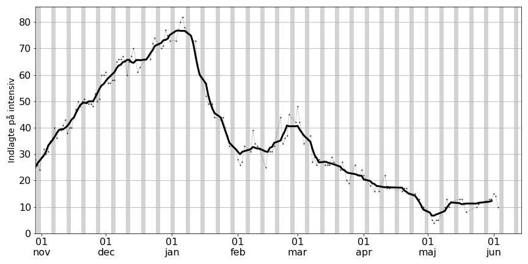
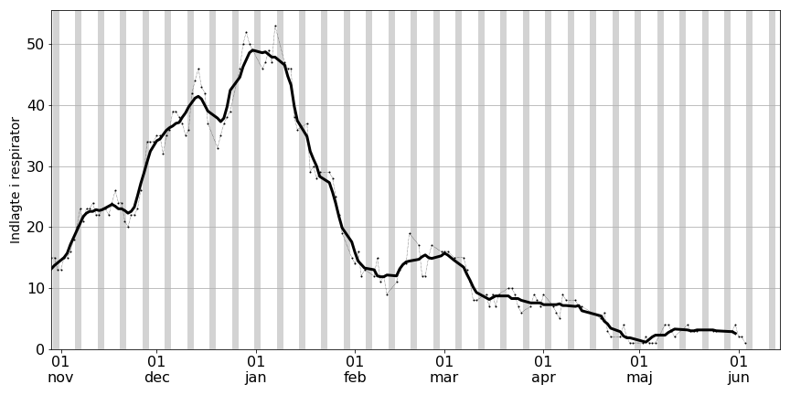
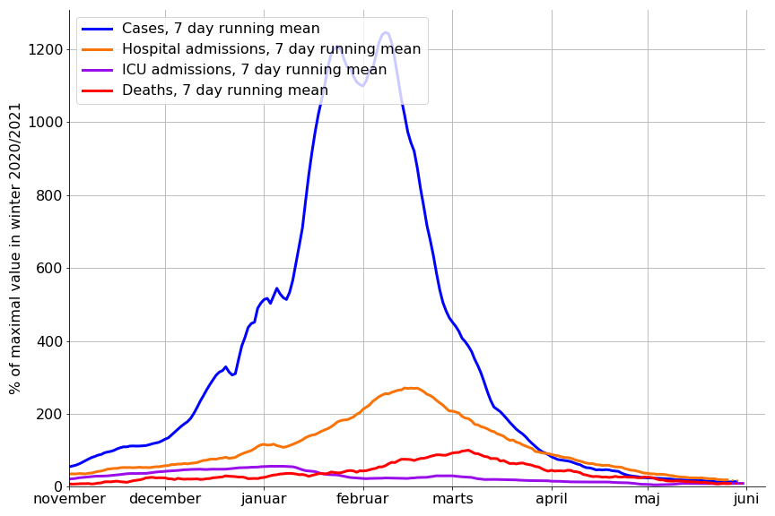

Tilfælde er baseret på positive COVID-19 PCR-test.
Data på figuren er vist ud fra den dag prøven er taget. Af denne grund er data for den seneste dato udeladt.






Forklaring:
Antallet af smittetilfælde (blå) og antallet af nyindlæggelser er normeret sådan at det maksimale antal i vinteren 2020/2021 er 100%. Værdien for 7-dages gennemsnit er benyttet.
Når smittetilfælde viser 1000% vil det altså sige at der er 10 gange så mange tilfælde som sidste år. Indlæggelsesraten per fundne smittetilfælde ses at være betydeligt lavere.
Herunder ses et zoom på indlæggelser og dødsfald

 Herunder ses data gående tilbage til december 2020 som illustration.
Herunder ses data gående tilbage til december 2020 som illustration.